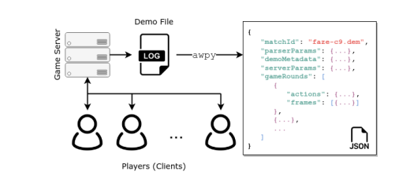

Sidequest: CS Analytics
Posted on: 2025-05-16
03:26:05
I am not a math guy. But some papers I have read recently have me deciphering math notation I don’t understand and trying to get a handle of statistics. Parsing CS demos into useable data en masse has become my new latest project.
Many papers on this topic have been written by Peter Xenopolous. Most of them are within the context of CS:GO, and I am deeply motivated to replicate as much of his research as I can in CS2.

There is a particularly interesting dataset, esta, that introduces a huge array of strategic opportunity for teams and opens up a whole data ecosystem within CS.
My first task is to write a competent, reliable parser for top-x team demos on hltv.